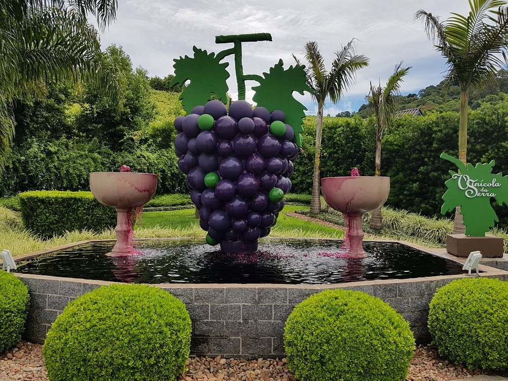

Pinheiro Preto, um paraíso serrano no sul do Brasil, convida você a desbravar seus encantos e sabores únicos.
Envolta em paisagens verdejantes e montanhas majestosas, a cidade se destaca como um refúgio perfeito para
quem
busca relaxamento, aventura e, principalmente, a experiência autêntica do mundo dos vinhos.
Clima ameno, solo fértil e altitude ideal criam o cenário perfeito para o cultivo de uvas de alta qualidade.
As
vinícolas de Pinheiro Preto, com seus métodos tradicionais e inovadores, transformam essa matéria-prima
excepcional em vinhos premiados e aclamados por especialistas.

Explore a Rota do Vinho e percorra vinícolas familiares e boutiques, cada uma com sua história e
tradição.
Degustação de vinhos, visitas guiadas pelos parreirais, piqueniques em meio aos vinhedos e jantares
harmonizados
são apenas algumas das experiências que te esperam.
Pinheiro Preto oferece uma gama de atividades para todos os gostos. Aventure-se em trilhas, explore
cachoeiras
cristalinas, pedale por paisagens bucólicas e desfrute da culinária local em restaurantes charmosos.
Venha celebrar a vida em Pinheiro Preto:
- Descubra a história e a cultura local: Visite museus, admire a arquitetura colonial e participe de eventos tradicionais.
- Mergulhe na natureza: Conecte-se com a fauna e flora exuberantes da região em parques e reservas naturais.
- Relaxe e rejuvenesça: Desfrute de spas e pousadas aconchegantes com vista para os vinhedos.
Explore as vinícolas de Pinheiro Preto:
- Bebidas Randon: Saboreie a tradição e a qualidade em cada rótulo, desde varietais clássicos até coquetéis surpreendentes.
- Pinheirense: Conecte-se com a história e a cultura local através de vinhos autênticos que expressam o terroir da região.
- Casal Piccoli: Desfrute da atmosfera familiar e acolhedora, degustando vinhos premiados e apreciando a beleza dos vinhedos.
- Vinhos Duelo: Experimente a inovação e a ousadia em vinhos que desafiam os sentidos e conquistam paladares exigentes.
- Vinícola da Serra: Descubra a produção artesanal e os sabores únicos de vinhos elaborados com carinho e paixão.